Solukhumbu · Nepal · 12 days
Everest Base Camp2,860 m → 5,364 m, on foot
Don't read the itinerary. Walk it. Scroll to climb 2,504 vertical metres from the Lukla airstrip to the foot of the highest mountain on earth — one day at a time.
Solukhumbu · Nepal · 12 days
Don't read the itinerary. Walk it. Scroll to climb 2,504 vertical metres from the Lukla airstrip to the foot of the highest mountain on earth — one day at a time.
Day 01 · 2,860 m
A 527-metre runway carved into a hillside at a 12° slope. The plane lands uphill because it has to. From here there are no roads — everything ahead moves on foot, on yak, or on a porter's back.

Day 03 · 3,440 m
A horseshoe of stone houses stacked into a natural amphitheatre. You stop here two nights whether you feel like it or not — the body needs time to build red blood cells before it goes higher.
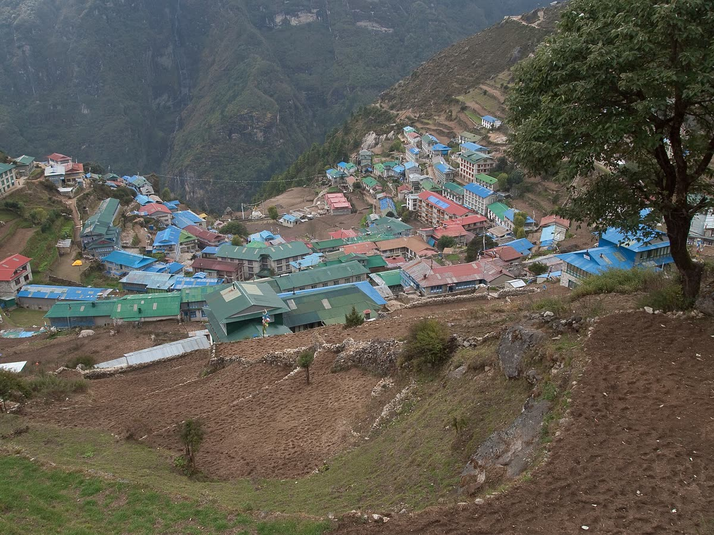
Everything above this line is carried. No roads, no wheels, no engines — only feet, yaks, and backs.Above the Khumbu
Day 05 · 3,867 m
The largest gompa in the Khumbu, on a ridge with Ama Dablam standing directly behind it. Trekkers arrive at dusk for the monks' evening prayers. This is the last of the rhododendron forest.
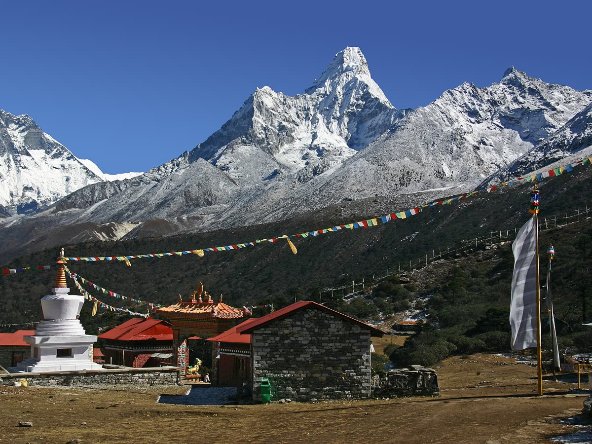
Day 07 · 4,410 m
Above the treeline. Stone-walled potato fields, wind that never stops, and roughly 60% of the oxygen you had at sea level. Most groups climb Nangkartshang at 5,083 m during the day and come back down to sleep.

The trail is never empty. Ahead of you and behind you, a thin line of people is doing exactly the same thing, one breath at a time.The line to the top
Day 09 · 4,940 m
A frozen lakebed with four lodges on it, beside the Khumbu Glacier. You drop your pack here, walk the final stretch to Base Camp, and come back to the same room to sleep — the highest night of the trek.

Day 10 · 5,364 m
Prayer flags, a boulder with the altitude painted on it, and the Khumbu Icefall grinding downhill behind you. You can't see the summit from here — Nuptse hides it. Nobody minds.

The 3,484 metres you don't walk
Your trek ends on that moraine at 5,364 m. The mountain keeps going for another two vertical miles — through the Khumbu Icefall, up the Western Cwm, past four high camps and the Hillary Step, to a summit roughly the size of a dining table.
Giving up is not in the blood.Nirmal “Nims” Purja Nepali mountaineer. Climbed all fourteen 8,000-metre peaks in six months and six days — a record that had stood at seven years.
Stills from the ascent
Pulled from the film above — the icefall, the Cwm, the high camps, the summit ridge. Click any frame to open it full size.
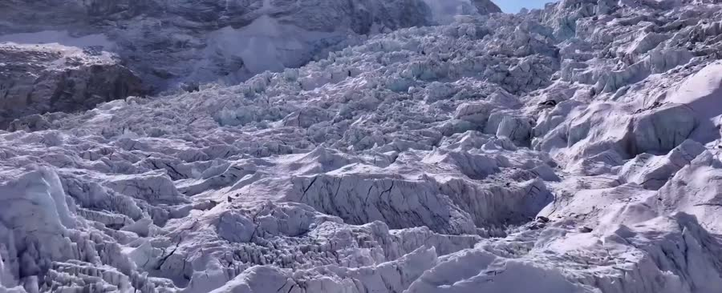
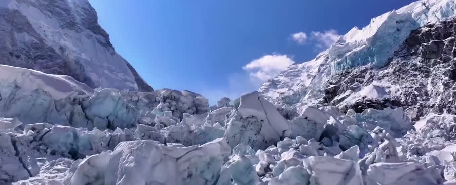
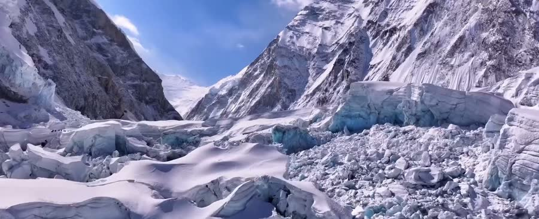
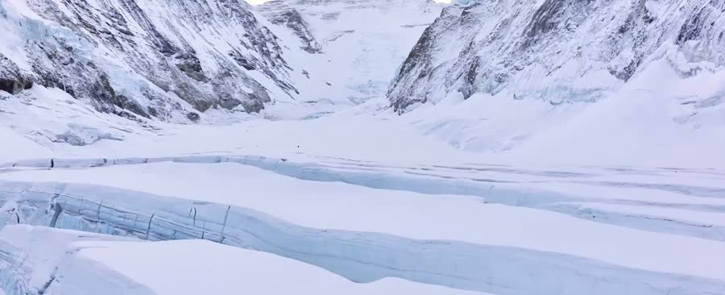
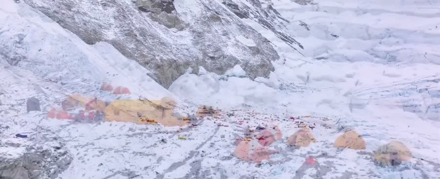
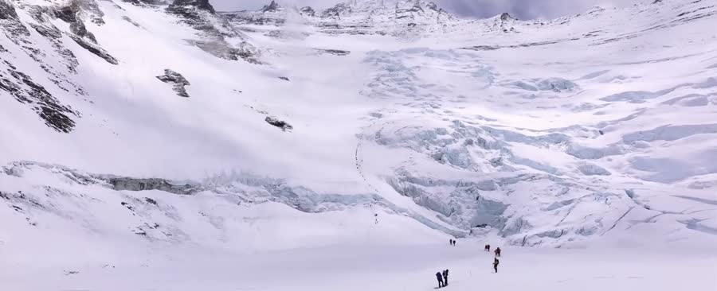
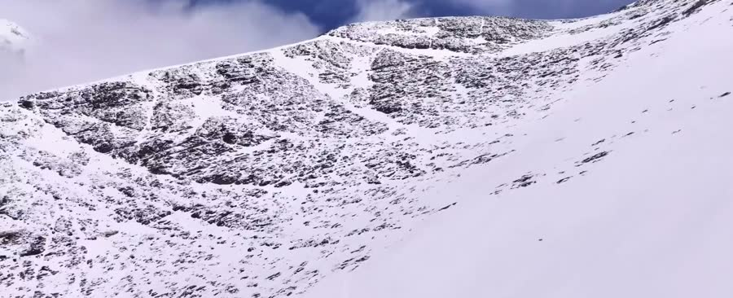
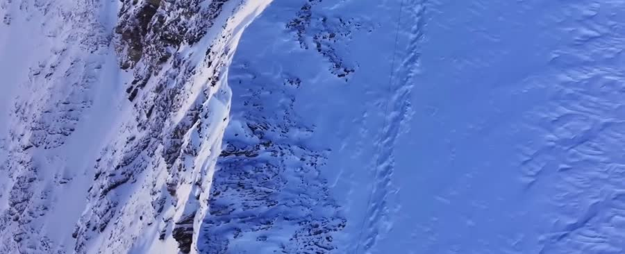
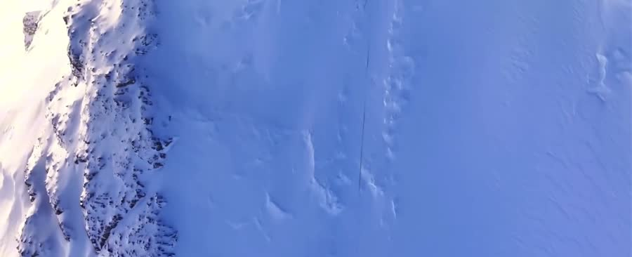
Your trek passport
Every checkpoint you passed on the way down this page. Scroll back up and you'll walk it again — the mountain doesn't move.
You will not stand up there. That's fine — almost nobody does. You'll stand at the bottom of it, which is further than most people ever get.8,848 m · Sagarmāthā
One foot, then the other
It asks whether you'll put one foot down, then the next, for nine days — slowly enough to breathe, stubbornly enough to keep going. Almost nobody who reaches Base Camp is exceptional. They just didn't stop.
You start at 2,860 m · Day oneDepartures Mar–May · Sep–Nov
13 nights, 14 days from Kathmandu. Licensed Sherpa guides, teahouse lodging, every permit handled.